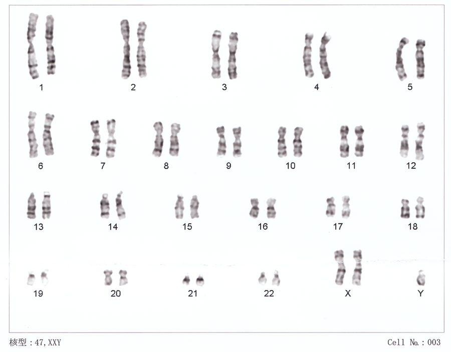

General information only. It does not replace advice from a health professional or genetic counselling.
At a glance
| Cause | An extra X chromosome in males (karyotype 47,XXY and variants) |
| Inheritance | Not inherited: an error in how chromosomes are shared out in sex cells |
| Frequency | About 1 in 500–700 males |
| Main features | Small testes, infertility, low testosterone, tall stature |
| Treatment | Testosterone, assisted reproduction, educational support |


What it is
Klinefelter syndrome is the most common sex chromosome variation in men. Instead of the usual XY pair, their cells have XXY: one extra X chromosome. It was described in 1942 by the American physician Harry Klinefelter in nine men with enlarged breasts, small testes and no sperm. The chromosomal cause was discovered in 1959 by Patricia Jacobs and John Strong in Edinburgh, one of the first findings of human cytogenetics.
It is common but underdiagnosed. It is estimated that only about a quarter of men with Klinefelter syndrome know they have it, and many find out as adults when they seek help because they cannot have children.
Cause
The extra X comes from an error in meiosis, the division that forms eggs and sperm, when a pair of chromosomes fails to separate (non-disjunction). About half the time the extra X comes from the father and half from the mother. When it comes from the mother, the risk rises slightly with maternal age.
There are variants:
- 46,XY/47,XXY mosaicism (10–15 %)2: only some cells have the extra X. Features are usually milder and sperm are sometimes present.
- Forms with more X chromosomes, such as 48,XXXY or 49,XXXXY: very rare, with greater effects on development and learning.
It is not a hereditary disease in the usual sense: parents are not carriers and the chance of it happening again in another child is very low.
Why it causes symptoms
As in women, one of the two X chromosomes is switched off, but some genes escape inactivation and their double dose disturbs development. The main effect is on the testes: the cells that form sperm are gradually lost from childhood, and at puberty the testes harden and remain small. They make little testosterone and hardly ever sperm.
Features
Features are very variable and often subtle:
- Small, firm testes, the most consistent sign in adults.
- Infertility: more than 90 % have no sperm1 in their semen (azoospermia).
- Low testosterone (hypogonadism): little facial and body hair, less muscle, tiredness, reduced sex drive and, over time, osteoporosis.
- Tall stature, with long legs.
- Gynaecomastia (breast enlargement) in a third or more.
- Language and learning: many boys are slower to talk and have difficulties with reading or attention, although intelligence is usually in the normal range.
- Personality traits: shyness, anxiety or social difficulties in some.
- Higher risk of metabolic syndrome, type 2 diabetes, venous thrombosis, autoimmune diseases and, though rare, male breast cancer.
Diagnosis
More and more cases are found before birth, incidentally, through prenatal cell-free DNA screening or an amniocentesis done for another reason. Balanced genetic counselling is important in these cases, because many men with 47,XXY lead entirely normal lives.
After birth it may be suspected because of:
- Childhood: delayed speech, school difficulties, undescended testes.
- Adolescence: incomplete puberty, gynaecomastia, small testes.
- Adulthood: infertility or symptoms of low testosterone.
Confirmation is by a blood karyotype. Hormone tests show low testosterone and very high pituitary hormones (FSH and LH), because the brain is trying to stimulate testes that do not respond.
Treatment
- Testosterone: usually started in adolescence or when levels fall, as a gel or injections. It improves energy, body hair, muscle, bones and mood. It does not restore fertility and in fact suppresses it.
- Fertility: with a technique called micro-TESE1 (microsurgical sperm extraction from the testis), sperm are found in about 40–50 % of men with Klinefelter syndrome. Using them for IVF with sperm injection, many have had biological children, the great majority with normal chromosomes. The best age to try is debated; some centres suggest late adolescence or early adulthood.
- Speech, school and psychological support in childhood.
- Surgery for gynaecomastia if it causes distress.
- Checks of bone density, weight, glucose and lipids.
Living with Klinefelter syndrome
Most men with Klinefelter syndrome study, work, have partners and lead normal lives. The biggest problem is that many are not diagnosed and miss years of testosterone treatment and the chance to preserve fertility. Raising awareness among paediatricians, endocrinologists and urologists is a priority for patient organisations.
What to ask at your appointment
Questions you can take with you. Not all of them will have an answer on day one, and your care team may add others.
- Do I need testosterone treatment, and from when?
- What fertility options do I have, such as testicular sperm extraction?
- Which bone, metabolic and breast checks should I have?
- What learning or language support can help a child with this diagnosis?
- Does it have any implications for my relatives?
Where to learn more
- Klinefelter's Syndrome Association (UK)
- The Association for X and Y Chromosome Variations, AXYS
- Orphanet: Klinefelter syndrome
See also: Turner syndrome, Down syndrome and Genes, chromosomes and genome.
Sources
- Zitzmann M, Aksglaede L, Corona G, et al. European Academy of Andrology guidelines on Klinefelter Syndrome. Andrology. 2021;9(1):145-167. doi:10.1111/andr.12909
- Gravholt CH, Chang S, Wallentin M, Fedder J, Moore P, Skakkebæk A. Klinefelter syndrome: integrating genetics, neuropsychology, and endocrinology. Endocr Rev. 2018;39(4):389-423. doi:10.1210/er.2017-00212
- Jacobs PA, Strong JA. A case of human intersexuality having a possible XXY sex-determining mechanism. Nature. 1959;183(4657):302-303. doi:10.1038/183302a0